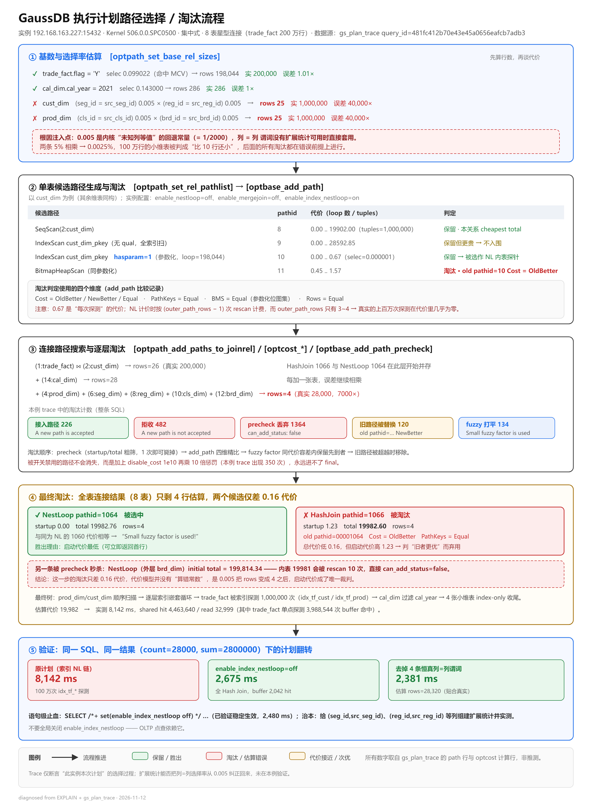
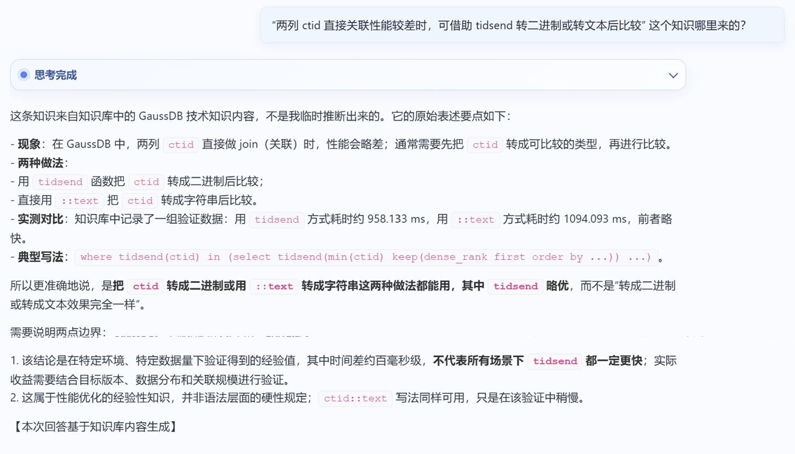

【GaussDB】关于2026年11月5号直播演示的一些补充
在上次直播中，我演示了使用智能体+skill来诊断coredump问题以及使用plan trace做执行计划的规划路径分析，还有一个调用非公开知识库的案例。直播精华可以参考这篇文章：
《Bethune X 公开实战 GaussDB AI 运维！coredump + SQL 分析信手拈来》
里面用到的两个skill，我已经上传了到白求恩X社区https://bethunex.enmotech.com/skills/authors/92fb729f2914e3178752ff26bf74f22e
本文补充一些我想分享，但直播的形式不方便分享的内容。
一、关于GaussDB符号表的获取方式
在直播中，我有提到，在我写的skill中，有自动获取符号表的方式，而且还有备选路径。
写这个skill的时候，我是这么和AI说的：
我打算做一个GaussDB的coredump 深入诊断skill，下面这些你可以参考一下
一、获取GaussDB 符号表的方式：
1. GaussDB主机，数据库安装用户下的tmp目录，比如/home/Ruby/tmp ,但是这里只会存最后一次从tpops下载的文件，所以第一次安装后，里面就会有GaussDB的安装包，解压后可以找到带Symbol名称的压缩包。不过一旦使用tpops安装过补丁，里面就只剩补丁了。
2. 从tpops主机的docker sftp服务中获取 ,sftp密码获取方式：
在tpops主机上执行
# 容器名可能会变
docker exec tpops_sftp_x86_64_8.8 bash -c \
'echo "$sftp_pwd" | /usr/local/seccomponent/bin/CryptoAPI \
-f /opt/sftp/tools/seccomponent/scc/scc.conf -d' |awk -F ':' '{print $2}'
sftp 用户名 sftpservice
sftp 端口 10022
进到目录 /sftpservice/package/dbs ，根据版本号进入对应的目录，比如 "25.1.30.10" ，注意这个版本号不是数据库内核版本号
再找到对应cpu平台、操作系统、集中式或分布式的安装包 v9.0.0.SPC0100-GaussDBV5-install-kylin-ha-x86_64*.tar.gz
解压，进入解压后的目录，找名字里带Symbol的压缩包就是
3.如果以上自动的方式无法拿到符号表，指引用户在tpops上获取相关文件再传到GaussDB主机上，或者让用户直接从本地上传
4.从内核507版本开始，符号表不随安装包分发，需手动提供，若用户没有，需要找华为云工程师提供
二、奔溃日志路径
su - Ruby ,source gauss_env_file ,cd \$GAUSSLOG\ffic_log
三、coredump文件路径
coredump文件一般默认在数据目录下，可用 ps -ef |grep gaussdb 找到-D参数 ，或者用 cm_ctl query -Cvd 找到该节点对应的数据目录
四、禁止未经用户许可直接gdb挂起运行中的进程，若用户期望用gdb调试运行中的进程，需告知用户风险，让用户确认
五、环境中如果没有gdb程序，经用户同意后可以安装
你可以在ssh root@192.168.1.8 , su - Ruby ,source gauss_env_file ，这个机器上进行实验
这个文章里的信息可以参考一下 https://www.darkathena.top/archives/gaussdb-507-kernel-setup-package-changes
$GAUSSLOG/gs_log 里有内核日志，也可以搜下在发生coredump之前，有没有相关性的日志
也就是说，如果想手动取符号表，可以用上面的方案1或方案2，当然只要没打过热补丁，直接从用户的tmp目录取是最方便的。打过补丁的话，就只能sftp连到tpops上取了。顺带一提，这个获取密码的方式也是我用AI分析出来的。另外，从507版本开始，安装包不带符号表了，这两种方法也就都没用了，只能找华为工程师获得后，再手动上传。不过507版本刚出几个月，主流应该还是505，所以目前还是能自行获取符号表的。
二、关于演示的coredump
这个案例在我之前的文章里有提过，详见以下两篇文章,本篇就不多说了，需要注意的是，507.0版本该场景表现和506版本不一样，但是仍然会coredump
【GaussDB】浅浅说下GaussDB中视图依赖关系的一个处理逻辑
【GaussDB】507内核版本新特性-视图失效重编译
三、关于PLAN TRACE的案例
- 数据构造脚本
\timing on
DROP SCHEMA IF EXISTS ptdemo_dp2 CASCADE;
CREATE SCHEMA ptdemo_dp2;
SET search_path = ptdemo_dp2, public;
CREATE TABLE seg_dim (seg_id int PRIMARY KEY, seg_name varchar(4) NOT NULL);
CREATE TABLE reg_dim (reg_id int PRIMARY KEY, reg_name varchar(4) NOT NULL);
CREATE TABLE cls_dim (cls_id int PRIMARY KEY, cls_name varchar(4) NOT NULL);
CREATE TABLE brd_dim (brd_id int PRIMARY KEY, brd_name varchar(4) NOT NULL);
CREATE TABLE cal_dim (cal_id int PRIMARY KEY, cal_year int NOT NULL);
CREATE TABLE cust_dim (
cust_id int PRIMARY KEY,
seg_id int NOT NULL,
reg_id int NOT NULL,
src_seg_id int NOT NULL,
src_reg_id int NOT NULL
);
CREATE TABLE prod_dim (
prod_id int PRIMARY KEY,
cls_id int NOT NULL,
brd_id int NOT NULL,
src_cls_id int NOT NULL,
src_brd_id int NOT NULL
);
CREATE TABLE trade_fact (
trade_id bigint,
cust_id int NOT NULL,
prod_id int NOT NULL,
cal_id int NOT NULL,
flag char(1) NOT NULL,
amt numeric(10,2)
);
INSERT INTO seg_dim SELECT i, 'S' || i FROM generate_series(0, 9) i;
INSERT INTO reg_dim SELECT i, 'R' || i FROM generate_series(0, 9) i;
INSERT INTO cls_dim SELECT i, 'CL' || i FROM generate_series(0, 9) i;
INSERT INTO brd_dim SELECT i, 'B' || i FROM generate_series(0, 9) i;
INSERT INTO cal_dim SELECT i, 2020 + (i % 7) FROM generate_series(1, 2000) i;
-- The master copy and the source-system copy of each code always agree.
-- Every row satisfies src_* = *, so the consistency predicates never filter.
INSERT INTO cust_dim
SELECT i, i % 10, i % 10, i % 10, i % 10 FROM generate_series(1, 1000000) i;
INSERT INTO prod_dim
SELECT i, i % 10, i % 10, i % 10, i % 10 FROM generate_series(1, 1000000) i;
-- trade_fact: two batches of 1000000 rows each.
INSERT INTO trade_fact
SELECT i, v, v, ((i - 1) % 2000) + 1,
CASE WHEN v % 10 = 7 THEN 'Y' ELSE 'N' END,
100.00
FROM (SELECT i, ((i - 1) % 1000000) + 1 AS v FROM generate_series(1, 1000000) i) g;
INSERT INTO trade_fact
SELECT i, v, v, ((i - 1) % 2000) + 1,
CASE WHEN v % 10 = 7 THEN 'Y' ELSE 'N' END,
100.00
FROM (SELECT i, ((i - 1) % 1000000) + 1 AS v FROM generate_series(1000001, 2000000) i) g;
CREATE INDEX idx_tf_cust ON trade_fact(cust_id);
CREATE INDEX idx_tf_prod ON trade_fact(prod_id);
ANALYZE seg_dim;
ANALYZE reg_dim;
ANALYZE cls_dim;
ANALYZE brd_dim;
ANALYZE cal_dim;
ANALYZE cust_dim;
ANALYZE prod_dim;
ANALYZE trade_fact;
- 慢SQL
SET search_path = ptdemo_dp2, public;
\pset pager off
\timing on
EXPLAIN (ANALYZE, COSTS ON)
SELECT count(*), sum(t.amt)
FROM trade_fact t
JOIN cust_dim c ON c.cust_id = t.cust_id
JOIN prod_dim p ON p.prod_id = t.prod_id
JOIN seg_dim s ON s.seg_id = c.seg_id
JOIN reg_dim r ON r.reg_id = c.reg_id
JOIN cls_dim cl ON cl.cls_id = p.cls_id
JOIN brd_dim b ON b.brd_id = p.brd_id
JOIN cal_dim cd ON cd.cal_id = t.cal_id
WHERE c.seg_id = c.src_seg_id AND c.reg_id = c.src_reg_id
AND p.cls_id = p.src_cls_id AND p.brd_id = p.src_brd_id
AND cd.cal_year = 2021 AND t.flag = 'Y';
- 执行计划
QUERY PLAN |
-------------------------------------------------------------------------------------------------------------------------------------------------------------------------------------------+
Aggregate (cost=19982.78..19982.79 rows=1 width=45) (actual time=7836.022..7836.023 rows=1 loops=1) |
-> Nested Loop (cost=0.00..19982.76 rows=4 width=5) (actual time=0.919..7800.330 rows=28000 loops=1) |
-> Nested Loop (cost=0.00..19981.32 rows=4 width=13) (actual time=0.847..7760.469 rows=28000 loops=1) |
-> Nested Loop (cost=0.00..19979.88 rows=4 width=21) (actual time=0.802..7718.148 rows=28000 loops=1) |
-> Nested Loop (cost=0.00..19978.44 rows=4 width=29) (actual time=0.756..7651.054 rows=28000 loops=1) |
-> Nested Loop (cost=0.00..19975.72 rows=4 width=17) (actual time=0.670..7265.749 rows=28000 loops=1) |
-> Nested Loop (cost=0.00..19968.38 rows=26 width=21) (actual time=0.263..6717.181 rows=200000 loops=1) |
-> Nested Loop (cost=0.00..19911.00 rows=25 width=12) (actual time=0.117..1991.516 rows=1000000 loops=1) |
-> Seq Scan on cust_dim c (cost=0.00..19902.00 rows=25 width=20) (actual time=0.061..649.243 rows=1000000 loops=1) |
Filter: ((reg_id = src_reg_id) AND (seg_id = src_seg_id)), (Expression Flatten Optimized) |
-> Index Only Scan using seg_dim_pkey on seg_dim s (cost=0.00..0.35 rows=1 width=4) (actual time=669.413..669.413 rows=1000000 loops=1000000)|
Index Cond: (seg_id = c.seg_id) |
Heap Fetches: 0 |
-> Index Scan using idx_tf_cust on trade_fact t (cost=0.00..2.28 rows=1 width=17) (actual time=4115.715..4247.234 rows=200000 loops=1000000) |
Index Cond: (cust_id = c.cust_id) |
Filter: (flag = 'Y'::bpchar) |
Rows Removed by Filter: 1800000 |
-> Index Scan using cal_dim_pkey on cal_dim cd (cost=0.00..0.27 rows=1 width=4) (actual time=445.119..445.119 rows=28000 loops=200000) |
Index Cond: (cal_id = t.cal_id) |
Filter: (cal_year = 2021) |
Rows Removed by Filter: 172000 |
-> Index Scan using prod_dim_pkey on prod_dim p (cost=0.00..0.67 rows=1 width=20) (actual time=351.686..351.686 rows=28000 loops=28000) |
Index Cond: (prod_id = t.prod_id) |
Filter: ((brd_id = src_brd_id) AND (cls_id = src_cls_id)) |
-> Index Only Scan using reg_dim_pkey on reg_dim r (cost=0.00..0.35 rows=1 width=4) (actual time=34.034..34.034 rows=28000 loops=28000) |
Index Cond: (reg_id = c.reg_id) |
Heap Fetches: 0 |
-> Index Only Scan using cls_dim_pkey on cls_dim cl (cost=0.00..0.35 rows=1 width=4) (actual time=18.471..18.471 rows=28000 loops=28000) |
Index Cond: (cls_id = p.cls_id) |
Heap Fetches: 0 |
-> Index Only Scan using brd_dim_pkey on brd_dim b (cost=0.00..0.35 rows=1 width=4) (actual time=16.807..16.807 rows=28000 loops=28000) |
Index Cond: (brd_id = p.brd_id) |
Heap Fetches: 0 |
Total runtime: 7840.187 ms |
其实有经验的一眼就能看到下面这个计划的不对劲，预估25行实际100万行。
-> Seq Scan on cust_dim c (cost=0.00..19902.00 rows=25 width=20) (actual time=0.061..649.243 rows=1000000 loops=1) |
Filter: ((reg_id = src_reg_id) AND (seg_id = src_seg_id)), (Expression Flatten Optimized) |
然而这个25行是怎么来的，以及凭什么是这个表先扫，凭什么是这个表先和seg_dim关联？通过plan trace就能解释，因为plan trace里会清楚描述SQL是怎么生成这个计划的，有没有改写，每种路径成本多少，哪些路径被淘汰，哪些路径被保留，都是有的。只不过人看起来比较费劲，所以用AI来分析plan trace的内容，是一种非常高效的手段。

通过plan trace里的相关指标，AI可以得出一个比较正确的hint
/*+ leading((((t cd) c) p)) hashjoin(t cd) nestloop(t c) nestloop(t p) */
四、关于知识库
做国产数据库的深入诊断，尤其是那些非开源的，真正的护城河就是实战的经验、以及来自厂商的故障报告、故障预警里的知识，而这些内容，往往都不公开。
将真实案例放到智能体的知识库里，绝对是有故障诊断有帮助的。
在直播演示中，我模拟了一个由于索引跳扫导致查询数据结果集不正确的问题，智能体成功定位到了数据库已知BUG，并且关联上了官方发的预警编号，获取到了预警里的规避方案以及修复版本号，这可以说是一个BUG定位最理想的结果。
我曾深度参与了一个重要金融客户的GaussDB支持，积累了很多案例，其中有一些我写成了文章公开了出来。
我知道这种文章到头来都会被白嫖，我期望的是，以后LLM训练的时候，能用到我的知识，或者agent搜索相关问题的时候能搜到我的文章，这样知识能真正被公开分享。
却不曾想，有些卖带自带知识库的agent厂家，在未经我授权的情况下，把我文章都扒走了，而且没有标注信息来源，甚至拒绝提供信息来源。这违反了我文章标注的许可协议(CC BY-NC-SA 4.0)
如下图，这个知识就来自于我的这篇文章 https://www.darkathena.top/archives/gaussdb-row_number-rewrite-performance-optimization ，里面的SQL片段和执行耗时的数字是完全一样的

注意，该产品主打就是不联网搜索，相关知识都从本地知识库或者直接拉起数据库进行实验来获取，作者信息均已被屏蔽。
我还试了其他仅在我文章里出现过的知识，在他们这个平台里都能检索到。我已经确认了这个爬取不是一次性的，而是持续的。我在该产品负责人的公众号文章里有过留言质询，然而没有得到回复。
知识共享本来是一种好事，但未经许可，把别人的知识打包起来卖算什么？而且还可能会和我当前所在的公司提供的同类产品参与同一个采购竞标。诶，这事我管不了了，毕竟行业里专门搞数据库运维的，有几个没去ORACLE的MOS里下载过文章的？
不过如果要诉侵权，大概率我是可以打赢的，本来想着做个固证，一看要交钱，后续也得花不少时间，就又不打算弄了。而且都是同一个圈子里的人，抬头不见低头见，闹僵了也不好。暂且观察一下他们的后续动向吧。技术文章我还是会继续写的，而且开放度可能会越来越大，各种国产数据库的BUG及优化案例，以后都可能会出现在我的文章里。